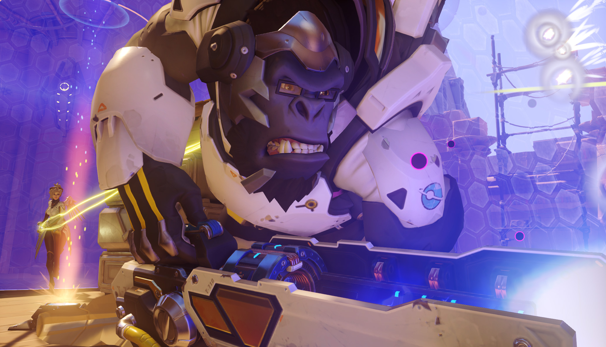
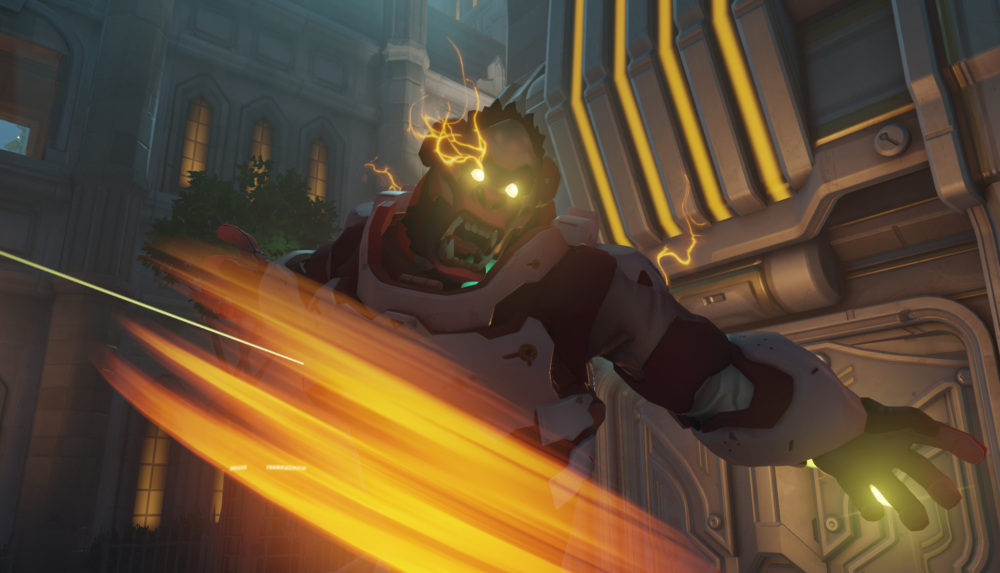

Tant que Winston garde le doigt sur la gâchette, son arme envoie un flot de décharges électriques à courte portée.
Winston bondit dans les airs avec l’aide de sa réserve d’énergie dorsale et retombe en infligeant des dégâts significatifs et en étourdissant les ennemis proches.
Le générateur d’écran de Winston projette un champ de force en forme de bulle qui absorbe les dégâts jusqu’à sa destruction. Les alliés à l’intérieur sont protégés et peuvent tirer.
Winston embrasse sa nature animale, augmentant notablement ses points de vie et le rendant très difficile à tuer, renforçant ses attaques en mêlée et lui permettant d’utiliser ses propulseurs plus souvent. Quand il est enragé, Winston ne peut utiliser que les propulseurs et les attaques au corps à corps.